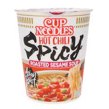

Pot noodles
Pot noodles

Description
A cheap, but pretty disguting meal, for people who can't be bothered to cook
Ingredients
- Your favorite brand of instant noodles
- 1 pack of spices, included in the pack of noodles
- 1 pack of dehydrated vegetables, included in the pack of noodles
- Grated cheese (optionnal)
Steps
- Open the pack of noodles. Add boiling water up to the line.
- Add the spices. Discard the pack of dehydrated veggies, cause that's just gross.
- Cover the noodles for a few minutes.
- If you are feeling fancy, add grated cheese to the noodles once they are cooked. We do not recommend you do this.
- Relive your student days and enjoy!